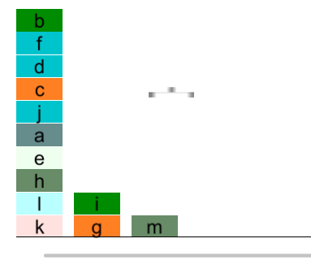

Animation ProfileLink
An Animation Profile (AP) is a user-written PDDL file which tells the Visualiser how a Domain is to be visualised. Each Animation Profile corresponds to one Domain.
Essentially, the AP provides a set of visual objects ("visual") within the domain, along with a set of mappings from Predicates to animation behaviours.
ScopeLink
The AP Language is designed to be flexible enough to allow for the animation of many simple PDDL domains, such as those found at https://github.com/planimation/documentation/tree/master/AnimationProfiles
Currently, APs have been written for four domains from this repository: Blocks, Towers of Hanoi, Logistics, and Grid.
Other simple domains can be visualised in the language. For more complicated domains, additional functions or object properties may be added (See section 4).
2 Using the LanguageLink
This section contains complete documentation for the syntax and semantics of the AP language. For a quick starting point to writing your own AP, see section 3.
2.1 Key ComponentsLink
PredicatesLink
The first content of the AP should be the Predicate blocks. Here is an example of a Predicate block.
(:predicate holding
:parameters (?x claw)
:effect (
(equal (?x x y) (claw x y))
)
)
There should be one or zero Predicate blocks for each Predicate in the Domain. If there is no Predicate block for a Predicate in the domain, the Predicate is ignored by the solver.
Predicate Blocks contain:
- The name of the Predicate, for example
holding. - The parameters of the Predicate. Parameters are objects to which the Predicate applies. For example,
holding(?x)means that the predicate on-table is true for the object ?x. - The effect of the Predicate. This is a logical statement concerning object properties which holds true when the predicate holds true. For example,
(equal (?x x y) (claw x y))means that the object?xis at the objectclaw. - (Optionally) A Priority:
- Specifies a priority in which predicates are solved
- Example:
:priority 0- Higher priority predicates are applied first
- This is required to ensure a limited number of domains (eg Towers of Hanoi) can be solved. Typically it is required when multiple predicates affect the same variables.
VisualLink
visual defines the objects represented on the screen.
An example of a visual block is:
(:visual block
:type default
:properties(
(showname false)
(x NULL)
(y NULL)
(color (function randomcolor))
(width 80)
(height 80)
(base64image iVBORw0KGg...oAA)
)
)
visual blocks contain:
- The name of the visual object, for example
block - The type of the object. Types can either be
default,custom, orpredefine. defaultobjects apply to any objects mentioned in the problem file. A 'block' in the problem file is an example of a default object.customobjects are additional to the problem file, and are created by the user for visual effect. The 'claw' is an example of a custom object - it mainly serves a visual purpose and is not specified in the problem or domain file. The robot in the Grid domain is another example of a custom object - it is not explicitly mentioned in the domain objects, but its behaviour is still fairly dynamic (moving around etc)predefineThese objects are assigned only to domain objects whose name matches any of the names in the :object field. This is used to apply properties to domain objects with specific naming conventions, for example,key1,key2, ... in the Grid domain. Alternatives, you can use%keyshortcut to represent all the objects start with "key".- Object properties. These properties govern the position and appearance of the object. See section 2.4 for a detailed list of object properties.
2.2 SyntaxLink
DescriptionLink
The syntax of the language is based on PDDL syntax, which is itself based on Lisp. See Section 2.2.2 for detailed resources on these languages.
ResourcesLink
- PDDL information: https://en.wikipedia.org/wiki/Planning_Domain_Definition_Language
- PDDL examples, solver: http://planning.domains/
- Lisp information: https://en.wikipedia.org/wiki/Lisp_(programming_language)
- Lisp Tutorial: https://www.tutorialspoint.com/lisp/
2.3 TypesLink
A type is a class of variable to which a property can be assigned. The use of the word 'type' is therefore fairly loose.
AP supports a number of 'types':
- Integer
- Boolean -
trueorfalse - Function - Allocates a property based on some function, for example,
distribute_horizontal - Color - either a colour constant, eg
BLACK, (see below), theRANDOMCOLORfunction (see section 2.5), or an rgb value, for example#FAA2B5 - Constant - A number of pre-defined constants exist. These should by convention be written in CAPITALS.
- Colours: BLACK, RED, BLUE, GREEN, YELLOW
- Integer Constants: PANEL_SIZE
NULL- ANULLvalue means the user is not specifying the property.NULLproperties are typically be set by Predicate rules.
A list of the types to which each property can be assigned is in section 2.4.
2.4 Functions and Object PropertiesLink
Documentations on functions and object properties are presented at: https://planimation-staging-181bc.web.app/documentation
3 Worked ExampleLink
The following example is for the Blocks domain. To see the final result for this AP, see the link in section 1.2 for the associated domain and problem files. These can be visualised with this animation profile.
The following is an example problem visualised with this animation profile:

The animation profile is as follows (comments added with a # symbol):
(define (animation blocksworld)
# the 'on' predicate takes two parameters (objects) ?x and ?y
(:predicate on
:parameters (?x ?y)
:effect(
# the effect of the `on` predicate is that ?x's x value is equal to ?y's x value, and that ?x's y value is equal to ?y's ?y value plus its height.
# that is, object ?x is on top of object ?y
(equal (?x x y) (?y x (sum y height))
)
)
(:predicate on-table
:parameters (?x)
:effect(
# the predicate on-table specifies that the object should be distributed horizontally, with a y value of 0
# and a margin of 5
(equal (?x x y) (function distribute_horizontal (margin 5)(y 0))
)
(:predicate holding
:parameters (?x claw)
:effect (
(equal (?x x y) (claw x y))
)
)
# Below are the list of visual objects
(:visual block
; block visual is the default visual type. All domain objects have this type by default
:type default
; all 'visual' objects have the following properties
:properties(
(showname false)
(x false)
(y false)
; randomcolor assigns a random color to the object
(color (function randomcolor))
(width 80)
(height 80)
; this is a base64 string representing the image of the object
(base64image iVBORw0KGg...oAA)
)
)
(:visual claw
; custom object types do not appear in the domain
; they are mainly cosmetic. This object represents the claw (the claw does not move)
:type custom
:properties(
(showname false)
(x 230)
(y 500)
(color black)
(width 80)
(height 40)
(base64image iVBORw0KGg...oAA)
)
)
(:visual board
:type custom
:properties(
(showname false)
(x 0)
(y 0)
(color black)
(width panel_size)
(height 5)
(base64image iVBORw0KGg...oAA)
)
)
)
Three other Animation Profiles are provided in the source code under Test/Sample Files. Each of these is commented for readability.
4 Extending the LanguageLink
4.1 Extension AreasLink
There are two primary methods of extending the AP language:
-
Object properties (section 2.4)
- This is for simple ways of extending the appearance of objects, eg adding rotation or the font of 'showname'
-
Adding functions (section 2.5)
- This is for more complex ways of describing object behaviours and interactions, eg adding new object layout options
4.2 Extension StepsLink
- Modify the extensions.py file in the directory to add any functions or properties. See the document 'VFG Documentation.md' for more information.
- In limited advanced cases, exta functions may need to be written for Visualiser (Unity)
- Add the necessary documentation in this .md file.